Lunch 🥪
As you all know, there are currently budgetary restrictions on all awaydays and events. We were determined to find a way to put on the GSS awayday again this year after such a successful day in 2024, but this means we have some restrictions on what we can do.
The government is currently not allowing any spend on catering for events like this, and so our hands are unfortunately tied. We didn’t think this should affect the day we have planned as the agenda is going absolutely jam packed full of valuable and fun sessions!
So what does this mean for you?
- If you are not Sheffield based, you will be able to claim T&S in line with the department's policy: Claim expenses. On any claims for lunch on the day, please change your cost centre to 10397 and email all receipts to analytical.lnd@education.gov.uk as well as attaching in workday. This only applies to lunch - if you are staying overnight, please claim your other meals normally.
- Unfortunately, if you are Sheffield based, the venue is not over 10 miles from your workplace (which is the minimum distance for claims as outlined in the guidance) and so Sheffield-ers will not be able to claim for lunch. I’ve raised this with the department's financial teams and had it reiterated that this is the guidance we must follow. Please make plans accordingly.
There are a number of nearby options for purchasing lunch, including the cafe inside the venue:
Check out the nearby shop options:
Check out the nearby cafes:
Of particular interest
Places to Eat
The Wave Shop
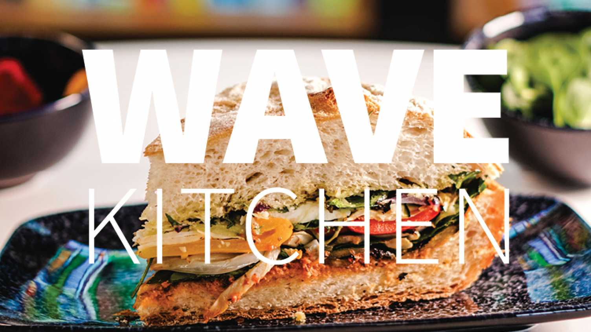More Information Back to Map
Cambridge Street Collective
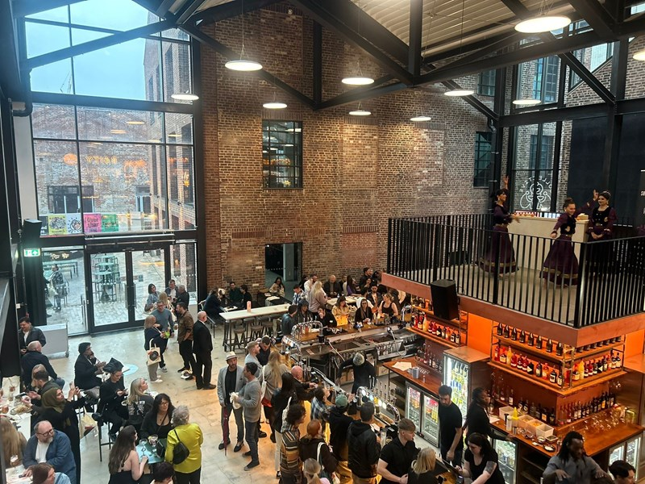More Information Back to Map
Sheffield Plate
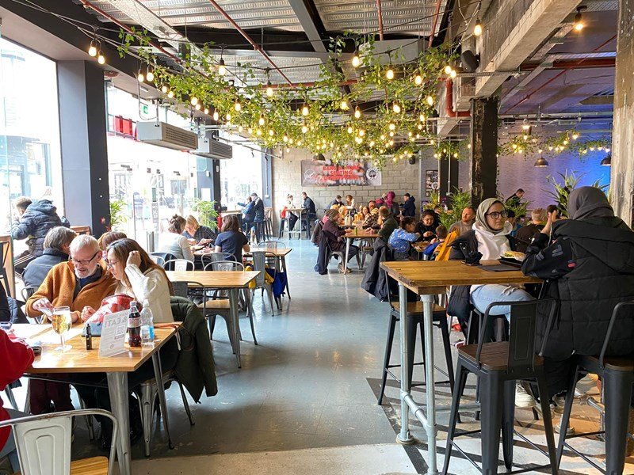More Information Back to Map
The Steel Cauldron
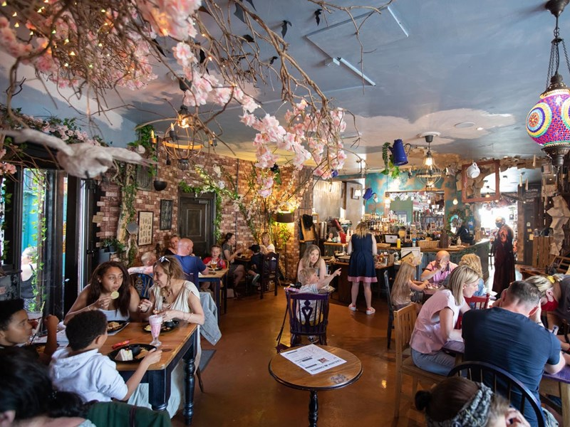More Information Back to Map
Thyme Cafe

More Information Back to Map
Ning's Thai Street Food

More Information Back to Map
The Street Food Chef
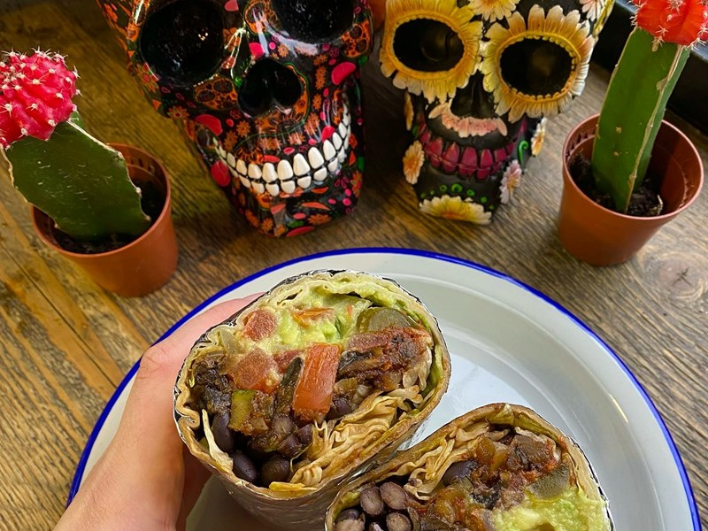More Information Back to Map
Church - Temple of Fun
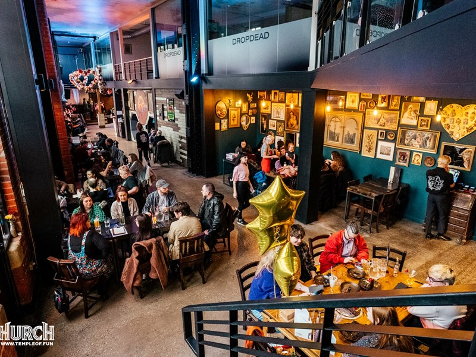More Information Back to Map
Sushi / Fro-yo / Breakfast

More Information Back to Map
Terrace Goods
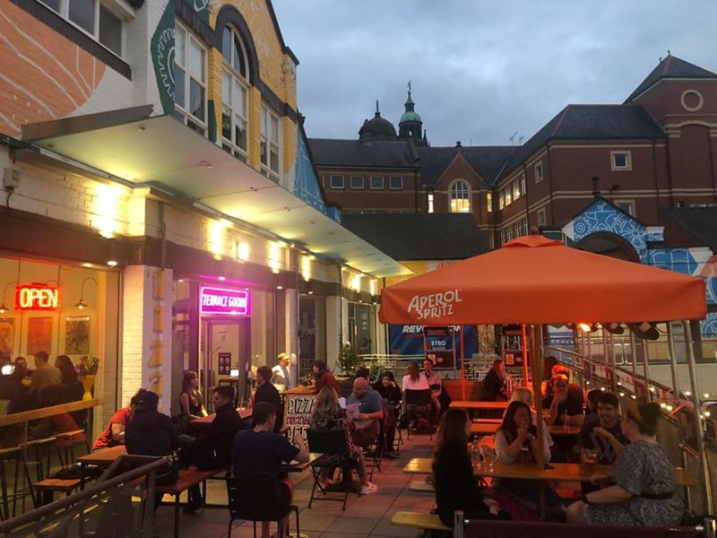More Information Back to Map
Humpit - The Hummus & Pita Bar

More Information Back to Map
Pubs and Bars
Sheffield Tap
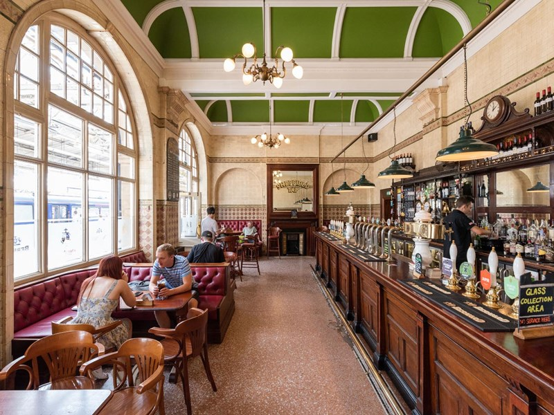More Information Back to Map
The Nottingham
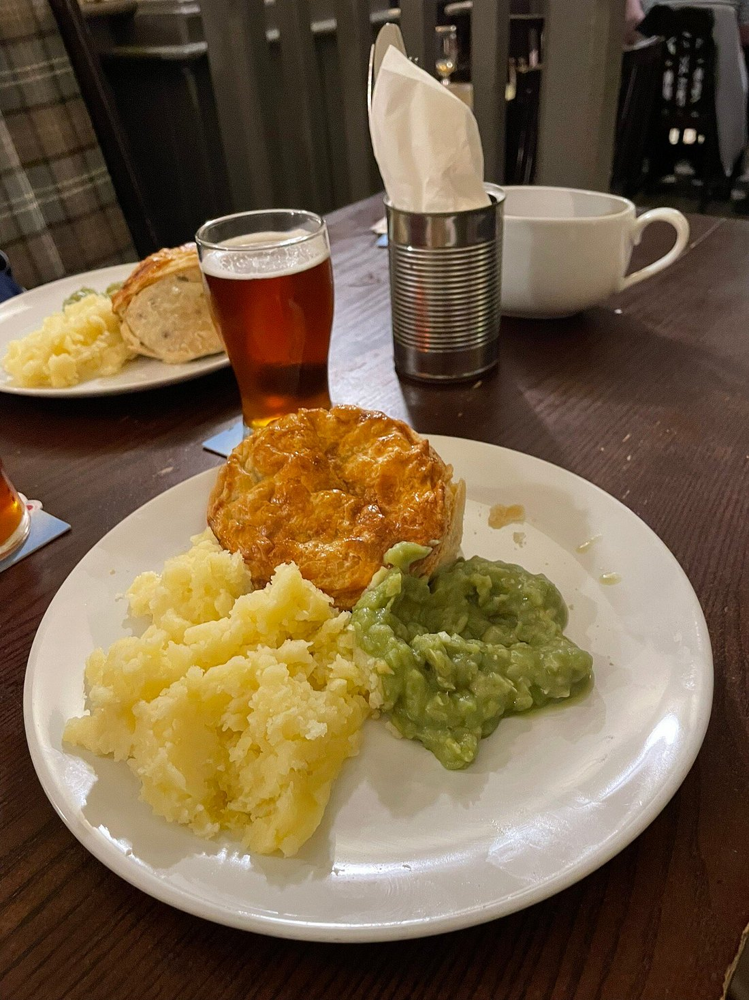More Information Back to Map
Dam House

More Information Back to Map
The Dove & Rainbow & The Banker's Draft

More Information Back to Map
The Museum & All Bar One

More Information Back to Map
Triple Point Brewery

More Information Back to Map
The Fat Cat

More Information Back to Map
University Arms

More Information Back to Map
The Red Deer

More Information Back to Map
Bar One

More Information Back to Map
Dog & Partridge

More Information Back to Map
Frog & Parrot
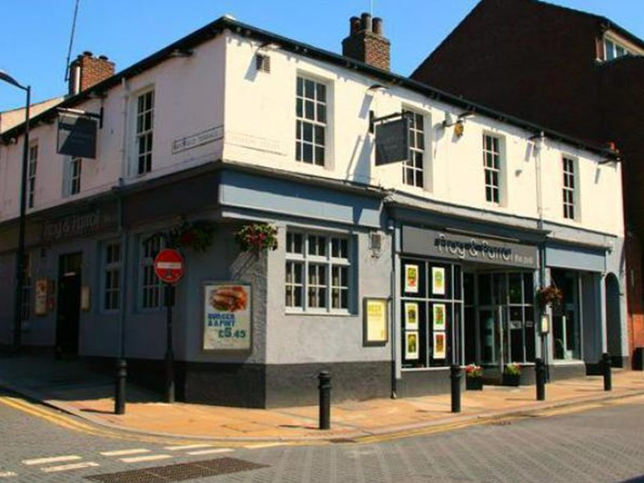More Information Back to Map
The Benjamin Huntsman

More Information Back to Map
The Botanist

More Information Back to Map
The Globe
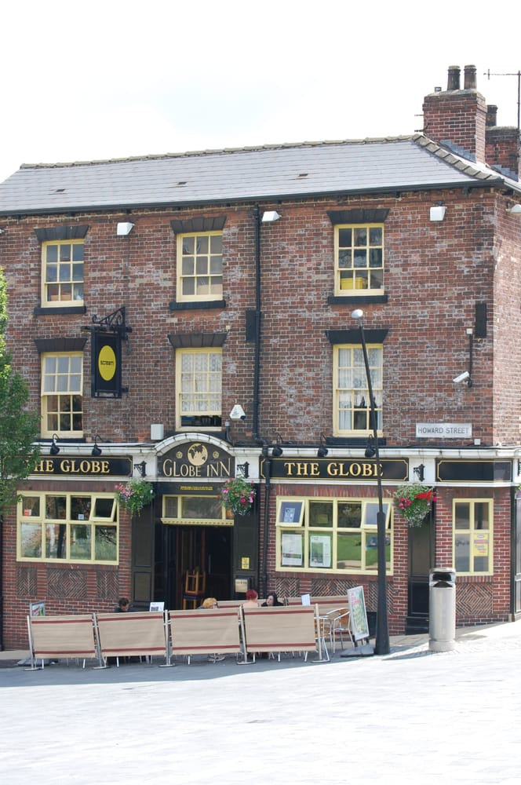More Information Back to Map
Head of Steam

More Information Back to Map